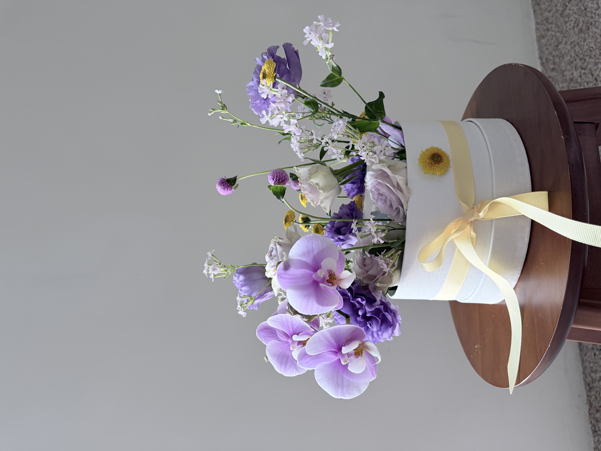
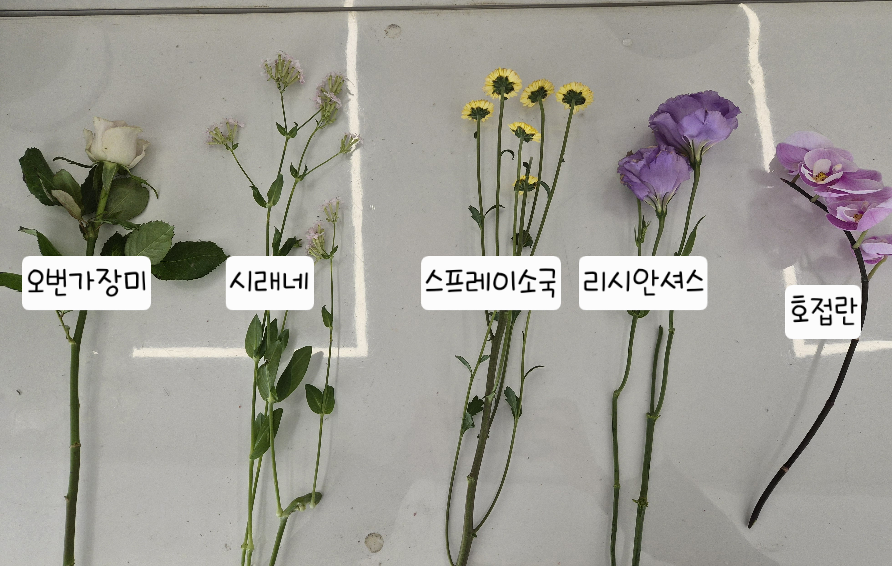
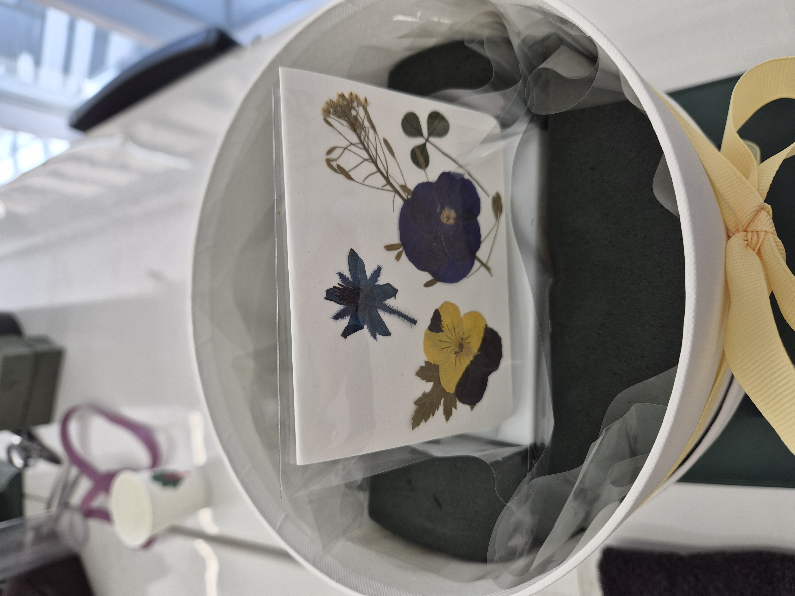
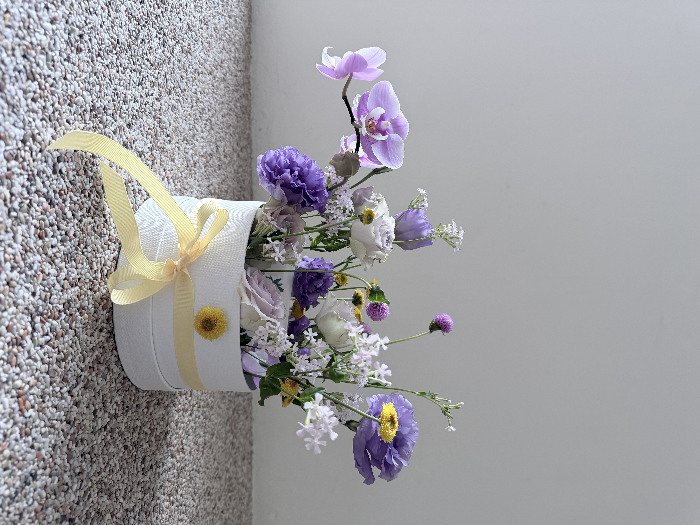
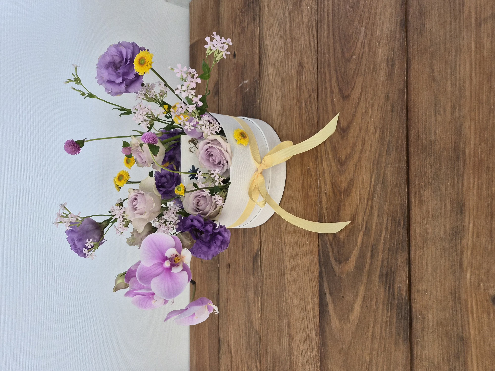
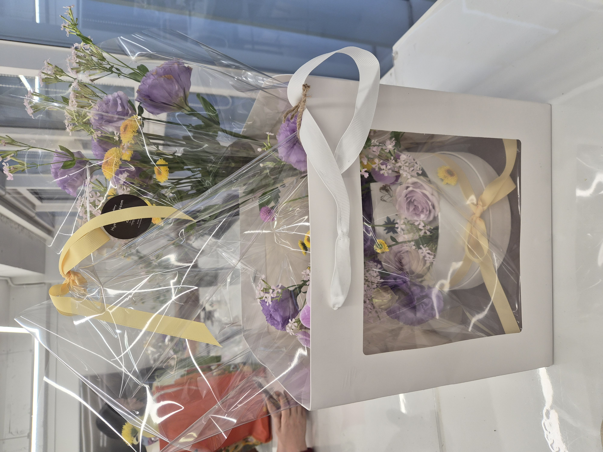

CLASS WORK · BASIC PRODUCTS
2026.10.31Lavender Bloom
Flower Box
ラベンダーカラーのフラワーボックス
04 / BASIC PRODUCTS
CONCEPT
Lavender blooms,
a thoughtful gift.
기초상품제작반 4회차에서 원형 플라워 박스와 압화 메시지 카드를 제작했습니다. 연보라 계열의 꽃을 중심으로 높낮이가 다른 소재를 배치하고, 선물용 용기와 포장까지 연결해 완성한 상품 제작 수업입니다.
호접란의 곡선이 왼쪽으로 흐르도록 두고, 리시안셔스와 장미의 둥근 꽃 형태를 용기 주변에 나누어 배치했습니다. 작은 노란 스프레이소국으로 색의 리듬을 더하고, 아이보리 박스와 연노랑 리본으로 부드럽게 마무리했습니다.
基礎商品制作コースの第4回では、丸いフラワーボックスと押し花のメッセージカードを制作しました。淡いラベンダー色の花を中心に高低差をつけ、左へ伸びるコチョウランの曲線と黄色い小花のアクセントを生かしました。アイボリーの箱と淡い黄色のリボンでギフトとして仕上げています。
COLOR PALETTE
色の構成
Soft lavender,
pale pink,
sunny yellow.
연보라와 라벤더 계열을 중심에 두고, 장미의 옅은 핑크와 아이보리로 색을 부드럽게 연결했습니다. 작은 노란 소국은 채도가 낮은 꽃 사이에서 산뜻한 포인트가 되고, 화이트 박스와 연노랑 리본은 선물 상품의 분위기를 완성합니다.
淡いラベンダーとピンク、アイボリーを中心に、黄色いスプレーマムを小さなアクセントにしました。白いボックスと淡い黄色のリボンが、やわらかな贈り物の印象を引き立てています。
SOFT LAVENDER
#B6A0D6DUSTY LILAC
#8E75B0BLUSH PINK
#E5CEDDIVORY WHITE
#F4EFEASUNNY YELLOW
#E7C94ELEAF GREEN
#728B74MATERIALS
使用花材
꽃잎의 볼륨이 서로 다른 장미와 리시안셔스, 가볍게 흩어지는 시레네, 작은 노란 소국, 곡선으로 뻗는 호접란을 함께 사용했습니다. 소재표에 기록된 다섯 종류를 기준으로 정리했습니다.
バラとトルコキキョウの柔らかな花形に、シレネの軽やかな小花、黄色いスプレーマム、横へ流れるコチョウランを合わせています。花材リストは授業で記録した5種類をもとにまとめました。
오번가장미
バラ（淡い紫）
리시안셔스
トルコキキョウ
호접란
コチョウラン
시레네
シレネ
스프레이소국
スプレーマム
Lavender · Blush Pink
Yellow · Ivory
淡い紫とピンクに、黄色とアイボリーを添えて。

COMPOSITION
構成とバランス
HEIGHT,
FLOW,
BALANCE.
원통형 박스의 테두리에서 꽃이 자연스럽게 올라오도록 높이를 달리했습니다. 장미와 리시안셔스를 비교적 낮은 위치에 배치하고, 위로 뻗는 시레네와 작은 소국으로 높낮이를 만들어 원형 용기 안에서도 답답하지 않은 공간을 구성했습니다.
왼쪽으로 뻗는 호접란은 꽃상자 바깥까지 이어지는 부드러운 곡선이 되어 시선을 확장합니다. 오른쪽에는 리시안셔스의 볼륨과 가는 꽃줄기를 나누어 두어 좌우가 똑같지 않은 형태를 만들었습니다.
압화 카드는 꽃을 배치하기 전 용기 안쪽에 함께 준비했습니다. 꽃의 높이와 포장 셀로판의 간섭을 고려해야 했으며, 마지막에는 투명 포장과 손잡이형 쇼핑백으로 선물 전달 형태까지 정리했습니다.
丸いボックスの縁から花が自然に立ち上がるよう、高さを変えて配置しました。低めのバラとトルコキキョウに、上へ伸びる小花の線を重ねています。左へ流れるコチョウランの曲線と右側の花のボリュームで、左右非対称の動きを加えました。箱の内側に押し花カードを用意し、透明フィルムとバッグで包装しました。

FINAL VIEW
完成したかたち



원형 화이트 박스 위에 연보라·핑크 꽃을 서로 다른 높이로 배치하고, 호접란의 곡선과 노란 소국의 작은 색 포인트를 살렸습니다. 마지막 사진에는 투명 포장과 쇼핑백에 담은 선물 상품의 모습도 함께 기록했습니다.
白い丸型ボックスに淡い紫とピンクの花を高低差をつけて配し、コチョウランの曲線と黄色い小花をアクセントにしました。透明フィルムとギフトバッグで包んだ完成形も記録しています。
REFLECTION
制作を振り返って
Soft colors,
open space,
a gift.
꽃바구니와는 다른 원형 박스 상품을 제작하면서, 용기의 높이와 입구가 꽃의 배치에 어떤 영향을 주는지 살펴볼 수 있었습니다. 호접란이 만드는 긴 곡선과 장미·리시안셔스의 낮은 볼륨을 대비시키고, 노란 소국을 작은 포인트로 활용한 점이 인상적이었습니다.
다만 꽃의 높이 차이를 크게 줄수록 위쪽의 빈 공간과 아래쪽의 밀도를 함께 조절해야 한다는 점도 확인했습니다. 다음에는 포장까지 고려해 꽃이 향하는 방향과 외곽의 실루엣을 더 미리 계획해 보고 싶습니다.
丸いボックスの高さと開口部が花の配置に与える影響を考える機会になりました。コチョウランの長い曲線と低い花のボリューム、黄色い小花のアクセントを組み合わせた一方、上部の余白と下部の密度を整えることが今後の課題です。
용기와 포장까지 고려한 실루엣을 먼저 구상하고, 꽃의 높낮이와 빈 공간을 더 정교하게 조절하기.